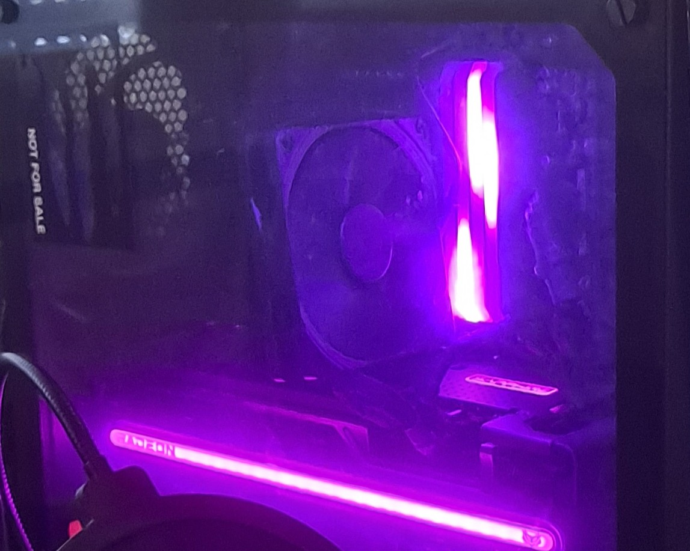

Passionné d’Informatique et du numérique en général, j’aime travailler en équipe et je suis prêt à m’adapter à tous types de postes grâce à mes facilités d’apprentissage et de communication. Mes différentes formations , expériences et affinités me motivent à développer mes compétences dans ce domaine.

En 2024, je me suis initié au changement de composants en autodidacte. J'ai eu l'occasion de changer ces composants dans ma tour et d'éxécuter ces manipulations :
En 2022, j'ai acheté mon premier clavier MIDI et j'ai commencé à créer de la musique avec un DAW.
J'ai pu composer plusieurs morceaux en utilisant différents VSTI dans un premier temps :
↗Mon premier projetPar la suite, j'ai pu investir dans une carte son qui m'a permis d'également rajouter des pistes de guitare :
↗ Mon second projetPar la suite j'ai fait des reprises de musiques et mixages audio :


J'ai à l'aide des outils contemporains tel que l'IA, me familiariser avec Blender dans le cadre de projets modding.
J'ai pu récupérer un modèle 3D d'un mod Skyrim afin de l'adapter aux jeux Monster Hunter Post 2017 :

Contexte : Lors de mon BPJEPS Animateur Culturel, j'ai eu l'occasion de consevoir ce projet a destination d'enfances de 11 à 17 ans

Contexte : Lors de mon CPJEPS Animateur Animation et de la Vie Quotidienne, j'ai eu l'occasion de consevoir ce projet a destination d'enfances de 6 à 10 ans
Prise en compte des besoins de l'interlocutteur
Meilleure compréhension des besoins et des préoccupations des autres
Sens de l'entraide, co-construction de dynamique solide
Engagement et dedication dans le travail
Capacité à s'intégrer et à interagir efficacement avec les autres
Capacité à traiter les informations sensibles avec prudence
2005
Aujourd'hui
2015
Aujourd'hui